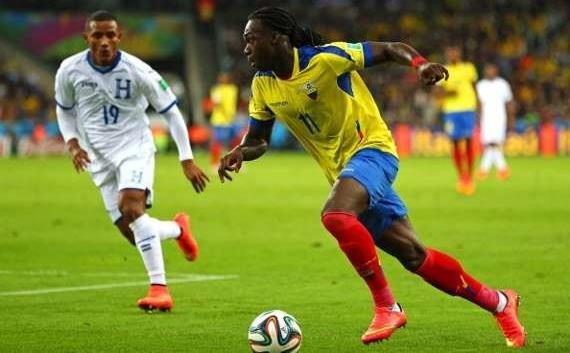

| Lista de Equipos | Calendario y Resultados | Tabla de Grupos |
|---|---|---|
| Goleo Individual | Goleo por Equipos | Estadísticas |
| Noticias | ||
| Argentina derrota a Nigeria | Luis Suarez podria perder patrocinadores | Ecuador y Honduras |
|---|---|---|
|  | ||
|
Porto Alegre. Nigeria y Argentina se enfrentaron este miércoles en el estadio José Pinheiro Borba de Porto Alegre por la última fecha del grupo F del Mundial Brasil 2014. Fue triunfo gaucho por 3-2. Argentina, llega a 9 puntos y ya estaba clasificada a los octavos de final, buscaba asentarse en el primer lugar del grupo para buscar un rival accesible en la siguiente fase. Lo logró. |
Luis Suárez podría sufrir un impacto financiero por su supuesto mordisco al zaguero italiano Giorgio Chiellini, un incidente que podría costarle en patrocinios. Dos de los patrocinadores del delantero uruguayo '888poker y adidas' ya insinuaron que podrían evaluar sus lazos comerciales con Suárez. |
El Grupo E arrojó a las dos primeras selecciones del continente americano eliminadas de la Copa del Mundo Brasil 2014; Honduras y Ecuador no pudieron ante los cuadros europeos de Francia y Suiza. Los catrachos sellaron su peor participación en Mundiales de su pequeña historia, al no obtener ni un solo punto pero sobre todo por haber conseguido sólo un gol durante estos tres duelos obra de Carlos Costly ante el conjunto ecuatoriano . |